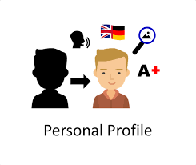

Rasha Ibrahim Al-Qayyam
rasha.alqayyam@gmail.com
 Personal Profile: Computer science, Fresh graduation, mobile application development, self-learning, leader skills. I am seeking a responsible job that requires my skills and knowledge in the company, which I can identify with.
 Training
-Nov 2020- Jan.2021) Al Hussein Technical University, National ICT Up-Skilling Program.
An intensive program, focusing on applied technical and employability skills,
including:
- Flutter: (180 Hours): Dart Basics, Flutter Basics, State Management
- [Provider], API with Firebase.
- English language (100 Hours): Rreport and an email writing, presentations
skills, conducting conversations in English, developing listening and
writing skills.
- Soft skills: (80 Hours): life and employability skills, such as time
management, positive attitude, communication skills Self-knowledge and
goal setting.
Training
-Nov 2020- Jan.2021) Al Hussein Technical University, National ICT Up-Skilling Program.
An intensive program, focusing on applied technical and employability skills,
including:
- Flutter: (180 Hours): Dart Basics, Flutter Basics, State Management
- [Provider], API with Firebase.
- English language (100 Hours): Rreport and an email writing, presentations
skills, conducting conversations in English, developing listening and
writing skills.
- Soft skills: (80 Hours): life and employability skills, such as time
management, positive attitude, communication skills Self-knowledge and
goal setting.
Skills:
Personal& Technical skills:
- Communication skill
- solving problems- Interpersonal skill
Hobbies or Interests:
- Writing a novel and reading.
- Artificial intelligence